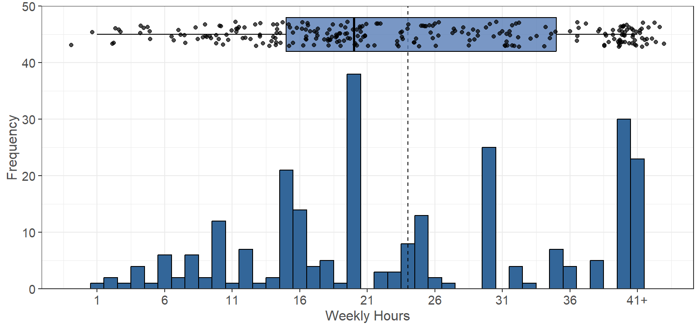
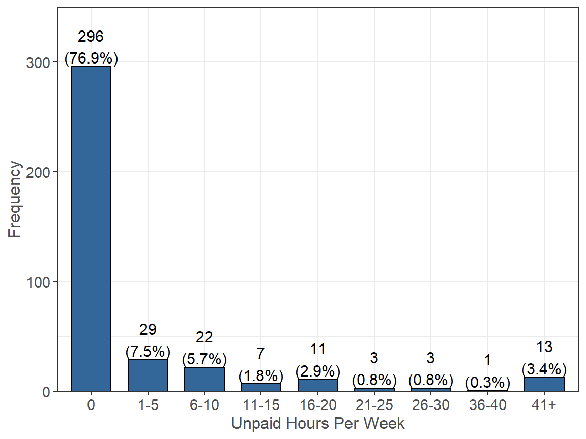
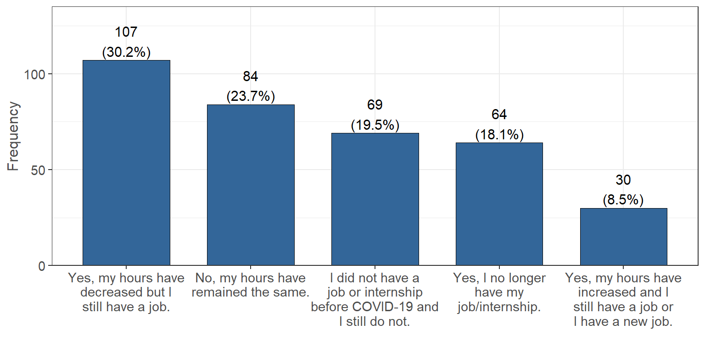
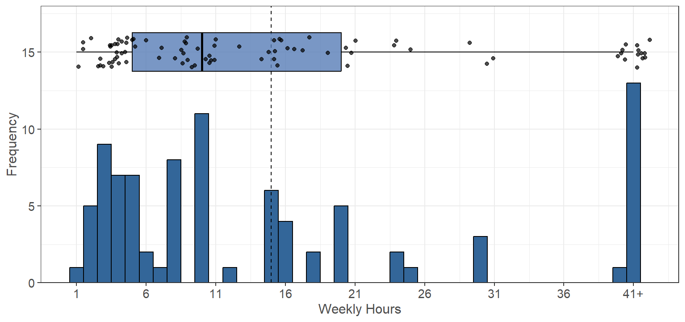

Workload
Weekly Paid Work Hours
Estimate the number of hours you work in a PAID job (for example, server at a restaurant, office assistant, etc.) or paid internship (for example, training, shadowing, or practicum) per week. It seems that the majority of people work either part-time or not at all. Only a small number of people are considered to be working full-time (40 or more hours per week). Below is a breakdown of the exact paid hours worked by survey participants as well as the impacts that COVID had on their hours.
Exact Hours Breakdown
Although the majority of the participants claim to work 0 hours per week, below is a breakdown of the exact number of hours for those who claim to work a paid job: Note that “41+” was rounded for 41 in the following analysis for the paid hours worked per week.
The average number of paid hours worked per week (denoted by the dotted line) is 24, while the median is 20 hours. It seems that the majority of students are considered part-time workers (less than 40 hours per week), with 20 hours being most common (NA people) and 40 hours following that.
Impact of COVID
Have the hours you work in a PAID job or internship changed due to COVID-19?  With the impact of COVID, it seems that most people were able to keep their current paid jobs with only slight changes. 108 people had their hours decrease, 87 people maintained the same hours, and 30 people had their hours increase. There was also 68 people who claimed that they no longer had their paid position due to the impact of COVID, while 73 people also claimed that they did not have a paid position before COVID.
Unpaid Work Hours
Estimate the number of hours you work in an UNPAID internship (for example, training, shadowing, practicum, and/or volunteer, etc.). Do not combine with answers above. We can see that the majority of people (296) do not work an unpaid job. A small number of people work part-time at an unpaid job and only a select few people work full-time at an unpaid job. Below is a breakdown of the number of unpaid hours worked per week.
Exact Hours Breakdown
Although the majority of the participants claim to work 0 hours per week, below is a breakdown of the exact number of hours for those who claim to work a unpaid job:  Note that “41+” was rounded for 41 in the following analysis for the unpaid hours worked per week.
The average number of unpaid hours worked per week (denoted by the dotted line) is 14.97, while the median is 10 hours. It seems that the majority of students do not work unpaid positions, with 41 hours being most common (13 people) and 10 hours following that.
Unpaid Caregiving Hours
Estimate the number of hours you spend each week on unpaid family obligations (for example, taking care of younger siblings, preparing family meals, running errands for the family, etc.)  It seems that the majority of people in the data do spend some time each week caring for family members. Only 59 people estimated that they spent 0 hours per week for family obligations. There are also around the same number of people who estimated they work full-time (40 or more hours per week) on these family obligations. Below is a breakdown of these unpaid hours spent on family obligations each week.
Exact Hours Breakdown
Although some of the participants claim to work 0 hours per week, below is a breakdown of the exact number of hours for those who claim to spend time on unpaid family obligations:  Note that “41+” was rounded for 41 in the following analysis for the unpaid caregiving hours worked per week.
The average number of unpaid caregiving hours worked per week (denoted by the dotted line) is 17.45, while the median is 12 hours. There does not seem to be a clear pattern in the number of unpaid caregiving hours worked, with 41 hours being most common (47 people) and 20 hours following that (43 people).
Funding
Partially funded by USDA SNAP, known in California as CalFresh, an equal opportunity provider and employer, and the California Department of Social Services. Any use of these results in further work must use the following citation:Center for Healthy Communities, "Basic Needs Survey", June 2020. Retrieved on xx-xxx-xxxx from https://chicocalfresh.github.io/bns-website/index.html